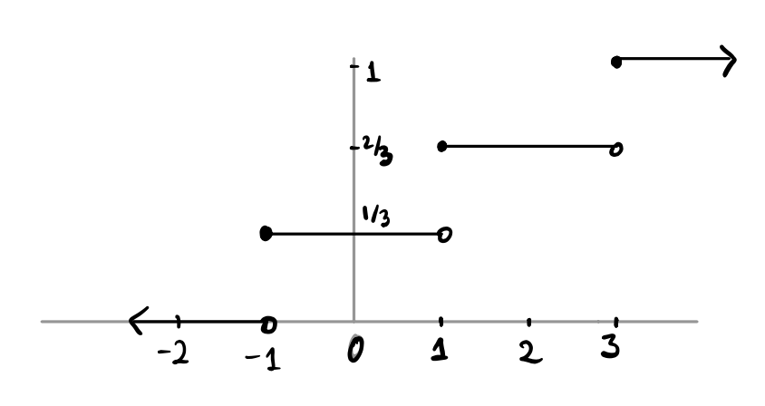
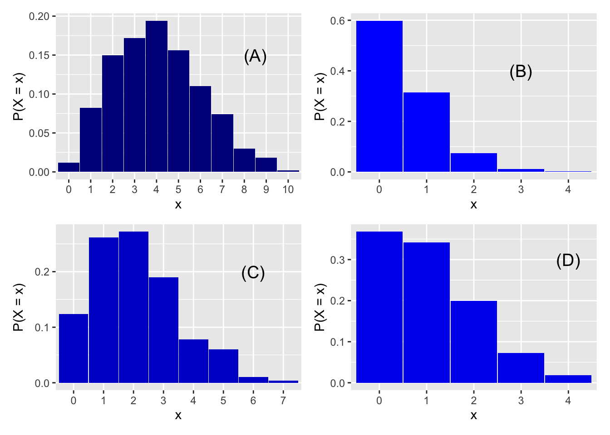

Code
countdown::countdown(25, bottom = 0)25:00
suggested times:
PS 8: time to work on it and then review (25 minutes)
Brief lecture on random variables (20 minutes)
Break (5 mins)
Concept Questions (20 minutes)
PS 9 (40 minutes)
countdown::countdown(25, bottom = 0)25:00
Let \(X\) be the number of heads in three tosses of a fair coin. What is the distribution of \(X\)? That is, what is \(f(x) = P(X = x)\)? What values will \(x\) take?
What about if \(X\) is the number of heads in 3 tosses of a biased coin, where the chance of heads is \(\frac{2}{3}\)? Now what is \(f(x) = P(X = x)\)?
Now suppose we toss a fair coin until the first time it lands heads, and let \(X\) be the number of tosses (including the last one, which is the first time the coin lands heads). What is the pmf of \(X\)? Is it binomial?
Finally, let’s consider a deck of cards, and we are interested in the number of hearts dealt in a hand of five. Call this number \(X\). What is the pmf of \(X\)?
Write out outcome space of 3 coin flips of a fair coin and use this to define rv X = number of heads. Write out the pmf and cdf, and draw the cdf. Show why \(X\) is binomial and what are \(n\) and \(p\)
Show what happens if coin is unfair. How the probabilities change.
Demo dbinom and pbinom and connection to pmf and cdf. Show how we can use rbinom to get an empirical histogram for three flips of fair or biased coin.
\(f(x)\) is the probability mass function of \(X\). What does that mean? What is the connection to the distribution table? The probability histogram?
\(F(x)\) is the cumulative distribution function.
What is the connection between \(f\) and \(F\)?
Draw an example on the board. Maybe box of tickets { 0, 0, 0 , 1, 1, 2, 2, 2} draw one ticket, and let \(X\) be the value of the ticket. Write out both \(f(x)\) and \(F(x)\) in function notation, then draw the cdf and show how we can get from the cdf to the pmf.
countdown::countdown(1, bottom = 0)01:00
Roll a pair of fair six-sided dice and let \(X = 1\) if the dice land showing the same number of spots, and \(0\) otherwise. For example, if both dice land \(2\), then \(X = 1\), but if one lands \(2\) and the other lands \(3\), then \(X = 0\).
What is \(P(X=1)\)?
The chance that \(X = 1\) can be broken up into six mutually exclusive situations, that the dice both show one spot, or both show two spots, etc. Each of these has probability \(1/36\) so the total probability by the addition rule is \(6/36 = 1/6\)
countdown::countdown(1, bottom = 0)01:00
The graph of the cdf of a random variable \(X\) is shown below. What is \(F(2)\)? What about \(f(2)\)?

\(F(2) = 2/3, f(2) = 0\)
countdown::countdown(1, bottom = 0)01:00
You have \(10\) people with a cold and you have a remedy with a \(20\%\) chance of success. What is the chance that your remedy will cure at least one sufferer? (Let \(X\) be the number of people cured among the 10. We are looking for the probability that \(X \ge 1\))
What is the chance that at least one person is cured?
\(P(X \ge 1) = 1 - P(X < 1) = 1 - P(X = 0) = 1 - (1-p)^{10}\), where \(p = 0.2\), because \(X \sim Bin(10, p)\). \(1-p = 0.8 \: \& \: 1-0.8^{10} = 0.8926\)
countdown::countdown(1, bottom = 0)01:00
There are 4 histograms of different Poisson distributions below. Match each distribution to its parameter \(\lambda\). Recall that \(\lambda\) is how many occurrences we think will happen in a given period of time.
\[ (1)\: \lambda = 0.5 \hspace{2cm} (2)\: \lambda = 1 \hspace{2cm} (3) \: \lambda = 2 \hspace{2cm} (4) \: \lambda = 4\hspace{2cm} \]
x1 <- rpois(500, 0.5)
x2 <- rpois(500, 1)
x3 <- rpois(500, 2)
x4 <- rpois(500, 4)
p1 <- data.frame(x1 = x1) |>
group_by(x1) |>
summarise(props = n()/500) |>
ggplot(aes(x = factor(x1), y = props)) +
geom_col(width = 0.98, fill = "blue") +
labs(x = "x",
y = "P(X = x)") +
annotate("text", x = 4, y = 0.4, label = "(B)", size = 5)
p2 <- data.frame(x2 = x2) |>
group_by(x2) |>
summarise(props = n()/500) |>
ggplot(aes(x = factor(x2), y = props)) +
geom_col(width = 0.98, fill = "blue2") +
labs(x = "x",
y = "P(X = x)") +
annotate("text", x = 5, y = 0.3, label = "(D)", size = 5)
p3 <- data.frame(x3 = x3) |>
group_by(x3) |>
summarise(props = n()/500) |>
ggplot(aes(x = factor(x3), y = props)) +
geom_col(width = 0.98, fill = "blue3")+
labs(x = "x",
y = "P(X = x)") +
annotate("text", x = 7, y = 0.2, label = "(C)", size = 5)
p4 <- data.frame(x4 = x4) |>
group_by(x4) |>
summarise(props = n()/500) |>
ggplot(aes(x = factor(x4), y = props)) +
geom_col(width = 0.98, fill = "blue4")+
labs(x = "x",
y = "P(X = x)") +
annotate("text", x = 9.5, y = 0.15, label = "(A)", size = 5)
(p4+p1+p3+p2) 
explain the smaller the rate, the lower the probability of higher values. A-4, B-1, C-3, D-2
countdown::countdown(5, top = 0)05:00
countdown::countdown(40, top = 0)40:00